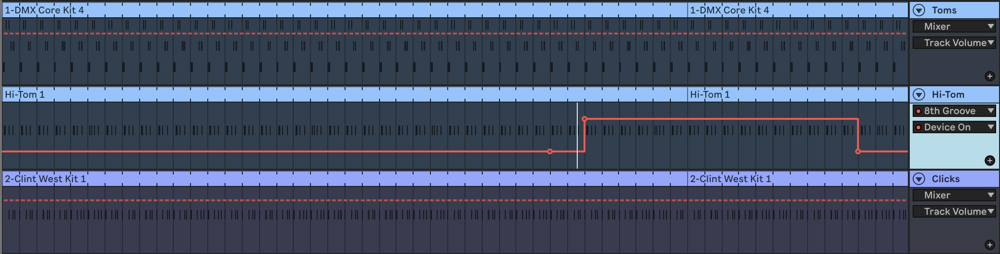
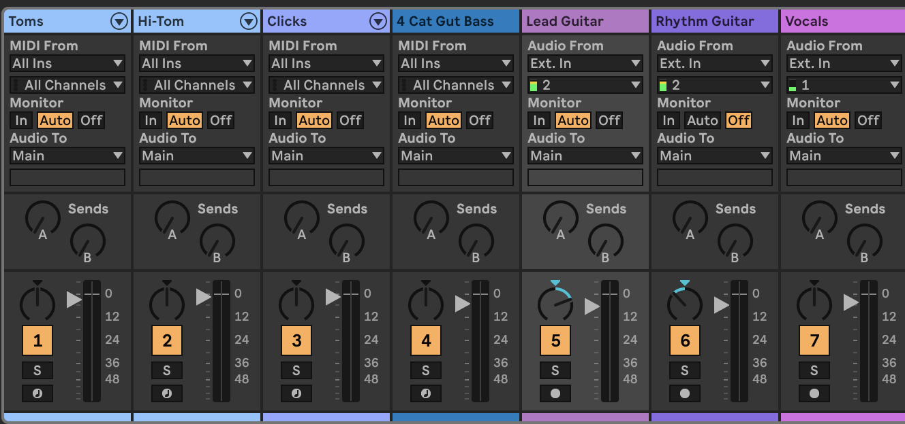

(The first clip is the song before mixing, the second one is after mixing and adding vocals).
Just as with the prior mixing assignment, I decided to mix a song I've written for the B31 songwriting class. This song contains a guitar with chorus, flanger, and a rotary speaker effect from a physical guitar pedal, along with bass and drums sounds from Ableton Live 12.
 
Lyrically and musically, this particular song tends to invoke a sensation
of dizziness while wandering through a desert, so I wanted to approach
mixing the track from that perspective. I primairly focused my mixing approach
around invoking that sensation much more, especially through panning and automating
certain effects.
Because the song's percussion feels exotic and was primarily done with toms,
my first big decision was to split the drum track into three separate ones (mostly
because of some auto-panning I already had in mind). Although I could've lowered the
volume on some tracks more than others, I really wanted the drums to have a large presence
in this song and eventually found myself leaving every drum track at the original level.
As far as every other track, the lead and rhythm guitars were panned for contrast adding
the bass was brought down to accent the drums a bit more. The vocals were tough since
I sang with the idea of adding a whisper texture to the song, but the track was loud
enough to where I didn't want to bring the volume down too much either.
I had mentioned auto-panning each tom track before and I did this to make each
drum part appear and re-appear almost randomly-this was my attempt at simulating
a dizzying desert pligrimage. I did this, and also added reverb on each individual
track (to make them sound more mirage-y of course).
I think my last two biggest changes would ivnvolve the automation of certain effects
during the song's 'guitar solo'. While I wouldn't say this song is fully finished yet,
the solo part of the song, to me at least, feels more like a chorus so far. I really wanted
to experiment awith highlighting certain instruments-not just the guitar. As far as ones
of the tom tracks, I decided to give it some delay by automating it to turn on during this.
The differencd between this track and how it sounded before is pretty subtle, but once you
pick up on it you get a bit more character from that track. I didn't want to change the track's
character too drastically yet, which is why I kept the delay at eight notes.
I automated some flanger into the lead guitar because it didn't feature flanger during the intro (but I also
liked how it sounded there without flanger). While I know I could've added an additional lead guitar track,
it just didn't seem necessary to me if I could already achieve the desired changes with one track (which I
felt I did). I also could've added flanger through my guitar pedal during this part, but I didn't feel like
I would need flanger there until I experiemented a bit. That part definitely reminds me of The Cure (here we go again)
and Cocteau Twins, but while I do try to make certain influences more subtle, the solo just didn't feel complete
without flanger anymore.